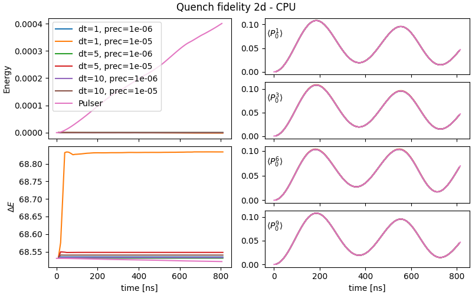
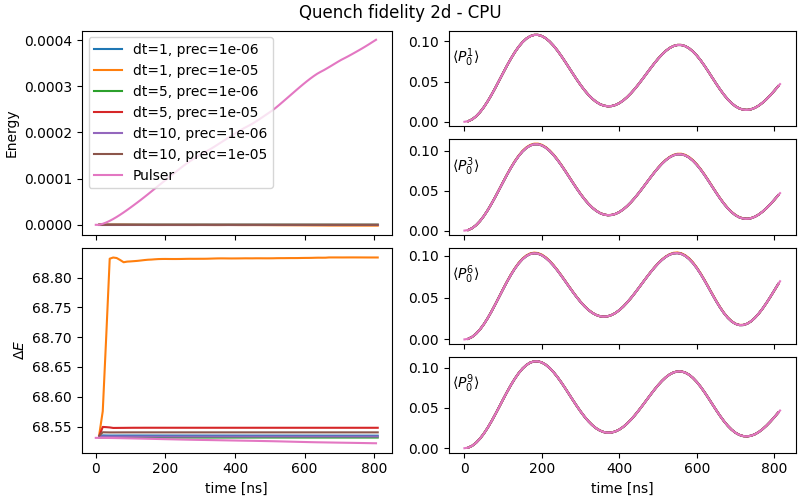

Accuracy
Here we discuss the emulator accuracy, as compared to Pulser state vector solver backend, but in the future we might directly compare with QPU results. Accuracy, here, specifically refers to observables:
- Energy: \(E = \langle\psi|H|\psi\rangle\)
- Energy variance: \(\Delta E = \langle\psi|H^2|\psi\rangle-E^2\)
- Magnetization: \(\langle P_{0}^j\rangle\) where \(P_{0}^j\) projects qubit \(j\) onto the \(|0\rangle\) state
The emulated sequences are going to be the same as before, an adiabatic and a quench. In both cases, 9 qubits arrayed in a 3x3 grid are used, so that the results can also be simulated in Pulser. We will check accuracy against two main tunable parameters in emu-mps:
precision[1]: at each step, throw away components of the state whose sum weighs less that the specified precision.dt: sampling time step of the sequence.
The goal is to show that for qubit numbers accessible to Pulser, the results are identical up to good precision.
 

Both sequences are emulated multiple times by varying both the precision and time step. Notice that any deviations from Pulser for the adiabatic sequence are impossible to detect at the scale of the graph for a wide range of emulation parameters. For larger qubit numbers, such as the 7x7 grid, the question of convergence is much subtler (see here). Rather, what is interesting there, is that even for a 2d system, emu-mps correctly treats the Rydberg interaction, regardless of the effective description of long-range interaction terms that emu-mps uses.
For the quench sequence, agreement with Pulser is still good for all shown parameter combinations, with the possible exception of the yellow curve, which has a deviation of 1%. For the quench sequence, the energy and energy variance are conserved quantities, meaning that all variation therein come from errors. Even though the relative errors are small, it's instructive to analyze the sources of these errors. For example, we see that emu-mps incurs the biggest error at the start of the emulation, when the bond dimension is still small (the bond dimension starts at 1, and increases from there). For a time-constant Hamiltonian, all deviations in the mean and variance of the energy come from truncation, and as expected, improving the precision reduces the error in the energy variance (see here). Finally, as explained in error sources in TDVP (see here), we see that reducing \(dt\) below a threshold (somewhere in the range of 1-5) causes a quick growth of the truncation errors, which requires improving the precision.
The errors incurred by emu-mps can be contrasted with Pulser, which uses a generic ODE solver backend that does not take into account constants of the motion. Both the mean and variance of the energy exhibit a deviation from their initial value that is linear in the number of time-steps taken by the solver.
effect of qubit ordering
On the performance benchmarks page, we show how a good qubit ordering can improve performance. Here we will show that a good qubit ordering also improves the accuracy of emu-mps significantly. For the purposes of the demonstration, we use a custom 12-qubit pulse as follows:
mock_device = AnalogDevice
duration = 6000
amplitude_maximum = np.pi
delta = np.pi
reg = pulser.register.Register.rectangle(3, 4, spacing=5)
seq = Sequence(reg, mock_device)
seq.declare_channel("ryd_glob", "rydberg_global")
rise_duration = duration / 3
fall_duration = duration / 3
sweep_duration = duration - rise_duration - fall_duration
rise = pulser.Pulse.ConstantDetuning(
RampWaveform(rise_duration, 0.0, amplitude_maximum), -delta, 0.0
)
sweep = pulser.Pulse.ConstantAmplitude(
amplitude_maximum, RampWaveform(sweep_duration, -delta, delta), 0.0
)
fall = pulser.Pulse.ConstantDetuning(
RampWaveform(fall_duration, amplitude_maximum, 0.0), delta, 0.0
)
amp = CompositeWaveform(rise.amplitude, sweep.amplitude, fall.amplitude)
det = CompositeWaveform(rise.detuning, sweep.detuning, fall.detuning)
pulse = pulser.Pulse(amp, det, 0)
seq.add(
pulse,
"ryd_glob",
protocol="no-delay",
)
The register spacing is immaterial because we run the sequence twice with a custom interaction matrix. We will plot the difference between the two corralation matrices at the end of the sequence for various parameters. The two interaction matrices contain only 0 and 1, where the ones are between qubit pairs
[(6, 7), (8, 9), (10, 11), (7, 0), (7, 3), (9, 1), (9, 5), (11, 3), (11, 5), (6, 1), (6, 2), (8, 0), (8, 4), (10, 2), (10, 4)]
and
[(6, 7), (8, 9), (10, 11), (7, 1), (7, 3), (9, 1), (9, 5), (11, 3), (11, 5), (6, 0), (6, 2), (8, 0), (8, 4), (10, 2), (10, 4)]
respectively. As can be seen, only two of the interaction terms are different (6,1) -> (6,0) and (7,0) -> (7,1), causing the correlation matrices to be extremely similar, requiring good accuracy for the simulation. Furthermore, since the two differing terms are "long range", these form a good stress test for emu-mps, which uses an effective description of such long-range terms. The results are as follows:
Emu-sv is used as a source of truth. The most salient feature is that the shown difference is largest on the (6,1), (6,0), (7,0) and (7,1) terms which are precisely the terms in the interaction matrix that have been changed. The checkerboard pattern is explained because while one interaction term is added, the other is removed, causing opposite signs in the difference. Then, to subleading order, you can see repeats of this effect as the changed interaction matrix causes further differences in the correlation structure. It can be seen that for a precision of 1e-7 emu-mps is not able to capture the differences in correlation at all without reordering: the difference between the two correlation matrices is essentially zero (see top right in the figure). As explained above, terms in the interaction matrix far from the diagonal are difficult to capture for emu-mps. Notice that qubit reordering alleviates this problem, and although agreement with emu-sv is not exact, the fundamental structure of the problem is visible. The same is true for a precision 1e-6 but the errors in emu-mps will be somewhat larger. Setting the precision to 1e-8 causes emu-mps to capture the long-range correlations more accurately, even without qubit reordering. It should be noted that in this case, qubit reordering still has positive effects. Firstly, the bond dimension required to accurately describe the quantum state will be lower, decreasing the runtime. Secondly, the results with qubit ordering are much more stable than those without. For example, when running the simulation without qubit ordering the results are hardware dependent: there is a noise of a similar magnitude as for precision 1e-7 without reordering, which just happens to be negligible on the AMD EPYC 7742 where this graph was generated. This problem vanishes when qubit reordering is used, and demonstrates the fundamental instability of TDVP in the presence of long-range interactions.